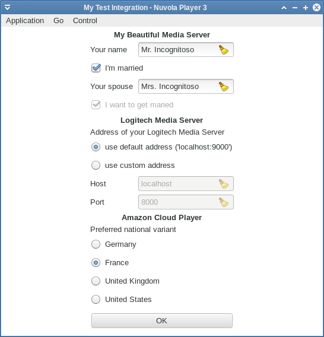

Since Nuvola Player 3 allows service integrations to store
a persistent configuration,
you might want to get some user input. Theoretically, you could use
JavaScript method window.prompt(), but Nuvola Player offers better methods:
initialization and preferences forms.
Initialization form can be requested at a start-up of a web app instance before any web page is loaded. You should use it only for configuration your service information cannot live without. For example, Logitech Media Server integration needs to know an address of server instance, because it has no idea what web page to load without this information.
The initialization from is show when entries parameter of
Nuvola.Core::InitializationForm signal
handler is not left empty. The example bellow asks user to provide name to show a greeting.
API used in WebApp.appendPreferences will be described later.
...
(function(Nuvola)
{
var USER_NAME = "app.user_name";
...
var WebApp = Nuvola.$WebApp();
WebApp._onInitAppRunner = function(emitter)
{
Nuvola.WebApp._onInitAppRunner.call(this, emitter);
Nuvola.config.setDefault(USER_NAME, "");
Nuvola.core.connect("InitializationForm", this);
}
WebApp._onInitializationForm = function(emitter, values, entries)
{
// If user name is not configured, request initialization form
if (!Nuvola.config.hasKey(USER_NAME))
this.appendPreferences(values, entries);
}
WebApp.appendPreferences = function(values, entries)
{
values[USER_NAME] = Nuvola.config.get(USER_NAME);
entries.push(["header", "My Beautiful Media Server"]);
entries.push(["string", USER_NAME, "Your name"]);
}
...
WebApp._onPageReady = function()
{
...
alert(Nuvola.format("Hello {1}!", Nuvola.config.get(USER_NAME)));
}
...
Global window object not available
The Nuvola.Core::InitializationForm signal is executed in a pure JavaScript environment without Window object. Use Nuvola.log() to print logging and debugging messages to terminal instead of console.log().
Info
New values are immediately available in Nuvola.config after user clicks OK button.
Preferences form can be used to change configuration specified in the initialization form and to add extra configuration option not necessary needed in initialization phase.
Preferences form is shown when user select Preferences from menu. NuvolaKit allows you to add
preferences specific to your service integration in
Nuvola.Core::PreferencesForm signal handler.
API used in WebApp.appendPreferences will be described later.
...
(function(Nuvola)
{
var USER_NAME = "app.user_name";
...
WebApp._onInitAppRunner = function(emitter)
{
Nuvola.WebApp._onInitAppRunner.call(this, emitter);
Nuvola.config.setDefault(USER_NAME, "");
Nuvola.core.connect("InitializationForm", this);
Nuvola.core.connect("PreferencesForm", this);
}
WebApp._onInitializationForm = function(emitter, values, entries)
{
// If user name is not configured, request initialization form
if (!Nuvola.config.hasKey(USER_NAME))
this.appendPreferences(values, entries);
}
WebApp._onPreferencesForm = function(emitter, values, entries)
{
this.appendPreferences(values, entries);
}
WebApp.appendPreferences = function(values, entries)
{
values[USER_NAME] = Nuvola.config.get(USER_NAME);
entries.push(["header", "My Beautiful Media Server"]);
entries.push(["string", USER_NAME, "Your name"]);
}
...Global window object not available
The Nuvola.Core::PreferencesForm signal is executed in a pure JavaScript environment without Window object. Use Nuvola.log() to print logging and debugging messages to terminal instead of console.log().
Info
New values are immediately available in Nuvola.config after user clicks OK button.
Info
While this example adds same entries to both initialization and preferences forms, it's not a rule. Feel free to add different entries to these forms.
Both Nuvola.Core::InitializationForm and
Nuvola.Core::PreferencesForm signals contain
values and entries parameters to describe forms. values is an object that contains
key-value pairs describing current configuration. These values will appear in the form. entries
is an array that contains specifications of form entries. Each form entry is an array, the first
item of a form entry describes a type of the entry.
["header", text]Centered bold text text.
["label", text]Regular text text.
["string", key, label]String entry with label label associated with key key.
["bool", key, label, enableEntries, disableEntries]A checkbox with label label associated with key key.
Arrays enableEntries and disableEntries provide a list of entry keys that will be
enabled or disabled when the checkbox is checked.
["option", key, value, label, enableEntries, disableEntries]Radio option with label label associated with key-value pair key and value.
Arrays enableEntries and disableEntries provide a list of entry keys that will be
enabled or disabled when this particular option is selected.
This sample form also makes use of translation functions.

...
(function(Nuvola)
{
...
// Translations
var _ = Nuvola.Translate.gettext;
var C_ = Nuvola.Translate.pgettext;
...
/* Form keys and values */
var USER_NAME = "app.user_name";
var MARRIED = "app.married";
var MARRIED = "app.married";
var WANNA_MARRY = "app.wanna_marry";
var SPOUSE = "app.spouse";
var DEFAULT_ADDRESS = "http://localhost:9000/";
var ADDRESS = "app.address";
var ADDRESS_DEFAULT = "default";
var ADDRESS_CUSTOM = "custom";
var HOST = "app.host";
var PORT = "app.port";
var COUNTRY_VARIANT = "app.country_variant";
var COUNTRY_VARIANTS = [
["de", C_("Amazon variant", "Germany")],
["fr", C_("Amazon variant", "France")],
["co.uk", C_("Amazon variant", "United Kingdom")],
["com", C_("Amazon variant", "United States")]
];
...
var WebApp = Nuvola.$WebApp();
WebApp._onInitAppRunner = function(emitter)
{
Nuvola.WebApp._onInitAppRunner.call(this, emitter);
/* Default configuration */
Nuvola.config.setDefault(USER_NAME, "Mr. Incognito");
Nuvola.config.setDefault(MARRIED, false);
Nuvola.config.setDefault(SPOUSE, "");
Nuvola.config.setDefault(WANNA_MARRY, true);
Nuvola.config.setDefault(ADDRESS, ADDRESS_DEFAULT);
Nuvola.config.setDefault(HOST, "localhost");
Nuvola.config.setDefault(PORT, "9000");
Nuvola.config.setDefault(COUNTRY_VARIANT, "fr");
Nuvola.core.connect("InitializationForm", this);
Nuvola.core.connect("PreferencesForm", this);
}
WebApp._onInitializationForm = function(emitter, values, entries)
{
// If user name is not configured, request initialization form
if (!Nuvola.config.hasKey(USER_NAME))
this.appendPreferences(values, entries);
}
WebApp._onPreferencesForm = function(emitter, values, entries)
{
this.appendPreferences(values, entries);
}
WebApp.appendPreferences = function(values, entries)
{
values[USER_NAME] = Nuvola.config.get(USER_NAME);
values[MARRIED] = Nuvola.config.get(MARRIED);
values[SPOUSE] = Nuvola.config.get(SPOUSE);
values[WANNA_MARRY] = Nuvola.config.get(WANNA_MARRY);
entries.push(["header", _("My Beautiful Media Server")]);
entries.push(["string", USER_NAME, C_("Service preferences", "Your name")]);
entries.push(["bool", MARRIED, C_("Service preferences", "I'm married"), [SPOUSE], [WANNA_MARRY]]);
entries.push(["string", SPOUSE, C_("Service preferences", "Your spouse")]);
entries.push(["bool", WANNA_MARRY, C_("Service preferences", "I want to get married")]);
values[ADDRESS] = Nuvola.config.get(ADDRESS);
values[HOST] = Nuvola.config.get(HOST);
values[PORT] = Nuvola.config.get(PORT);
entries.push(["header", _("Logitech Media Server")]);
entries.push(["label", _("Address of your Logitech Media Server")]);
entries.push(["option", ADDRESS, ADDRESS_DEFAULT,
_("use default address ('localhost:9000')"), null, [HOST, PORT]]);
entries.push(["option", ADDRESS, ADDRESS_CUSTOM,
_("use custom address"), [HOST, PORT], null]);
entries.push(["string", HOST, "Host"]);
entries.push(["string", PORT, "Port"]);
values[COUNTRY_VARIANT] = Nuvola.config.get(COUNTRY_VARIANT);
entries.push(["header", _("Amazon Cloud Player")]);
entries.push(["label", _("Preferred national variant")]);
for (var i = 0; i < COUNTRY_VARIANTS.length; i++)
entries.push(["option", COUNTRY_VARIANT, COUNTRY_VARIANTS[i][0], COUNTRY_VARIANTS[i][1]]);
}
...See article Web apps with a variable home page URL for use cases of Initialization and Preferences Forms to allow user specify a custom home page url.